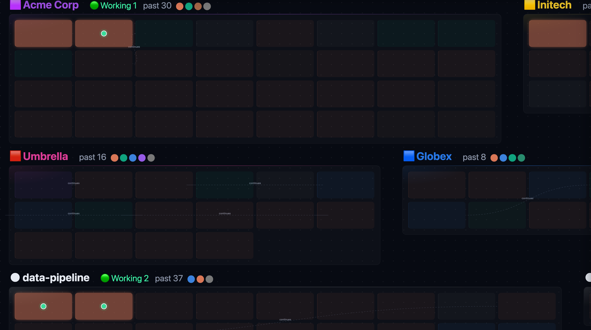
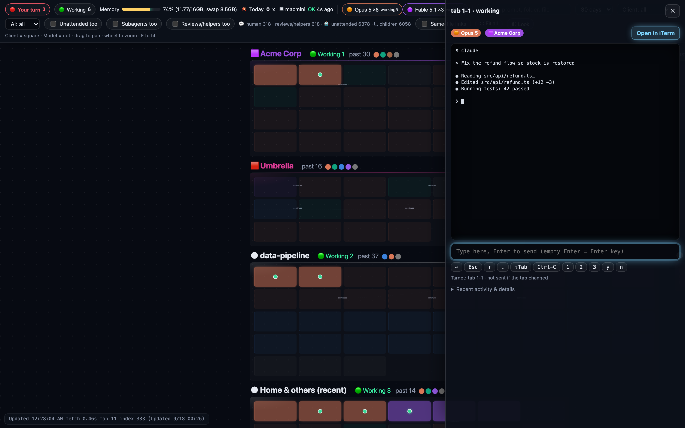
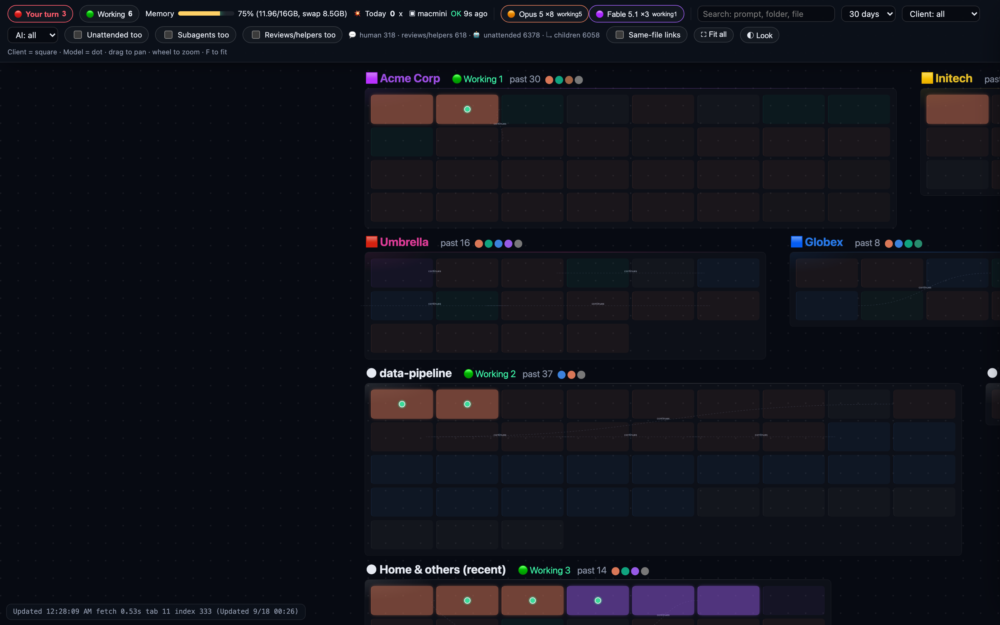

Every Claude Code and Codex session on one canvas, grouped by client and project, with real terminals inside. When an agent needs you, its card lights up — and your Dock tells you how many are waiting.

Terminal tabs all look the same. Tmux hides them. AIBoard watches every session (via Claude Code hooks and Codex's own records), turns each one into a card, and lights the card up the moment it needs a decision. Click it, and you're typing in that terminal in 0.2 seconds.
Built for people who run several agents across several clients, and need to see all of it at once.
Claude Code and Codex, live and past. Grouped by client (square) and project. Model shown as a colored dot. Lines connect a session to the one it continued from, reviewed, or edited the same files as.
Permission prompts, questions, stopped sessions. The card pulses red, the Dock badge counts them, and a macOS notification takes you straight to that terminal.
Not a chat wrapper. A native terminal (SwiftTerm) runs the actual CLI. ⌘T for a new Claude, ⌥⌘T for Codex, ⇧⌘W for Claude in a fresh git worktree.

The right pane is the session's own terminal. Approve with one key, send a message, or jump into it fullscreen. Sessions still running in iTerm show up too — AIBoard finds them by tty, so nothing changes about how you already work.
from click to typing
worst frame while panning

13,000+ sessions indexed into SQLite, queried in under half a second. Resume any of them into a new terminal with one click. Subagents fold under their parent. Unattended runs (cron, claude -p) stay out of the way unless you ask.
board server, resident
the app itself
There are good tools in this space. Here is what each one does, from their public pages and repositories as of 2026-09-18. AIBoard's bet is the combination: a canvas grouped by client, OS-level "needs you" alerts, and your last 30 days — in a native app.
| AIBoard | Maestri | cmux | termcanvas | Switchboard | Conductor | Claude Agent View | |
|---|---|---|---|---|---|---|---|
| Claude Code + Codex | both | both (+OpenCode) | any, via hooks | both (+Gemini…) | both | both (+Cursor) | Claude only |
| Layout | infinite canvas | infinite canvas | vertical tabs | infinite canvas | list / grid | workspace list | list |
| Group by client / project | client & project | workspaces | workspaces | repo → worktree | project / track | — | directory |
| Detects "needs you" | yes | — | yes (blue ring) | yes (dot) | yes | — | yes |
| macOS notification + Dock badge | both | summary window | notification | — | in-app only | — | notification |
| Past sessions, resumable | 30 days, indexed | layout only | layout only | replay | search & fork | — | /resume |
| Picks up sessions already running in iTerm | yes (by tty) | — | no | no | reads history only | — | no |
| Terminal engine | libghostty | own (Metal) | libghostty | xterm.js | xterm.js | — | — |
| Built with | Swift / AppKit | Swift / SwiftUI | Swift / AppKit | Electron | Electron | native Mac | — |
| Price | free, MIT | free / $18 one-time | free (GPL-3.0) | free (MIT) | free (MIT) | free / $50 / $60 | in Claude plans |
| Telemetry | none | none | — | "no data collected" | — | SOC 2 cloud | — |
“—” means we couldn't confirm it from public sources. Corrections welcome — open an issue.
brew install --cask aiboardor download the .app from Releases. macOS 13+. Requires Python 3 (ships with Xcode Command Line Tools) for the board server.
Open AIBoardYour running Claude Code and Codex sessions appear on the board within a few seconds — including the ones already open in iTerm.
⌘TOpens a new Claude Code terminal in the current folder. ⌥⌘T Codex · ⇧⌘W Claude in a git worktree · ⌘B hide the board.
~/.claude, ~/.codex). It never uploads them.127.0.0.1 only, checks Host and Origin, and refuses cross-site writes.?demo=1 mode replaces them with fake ones for screenshots.